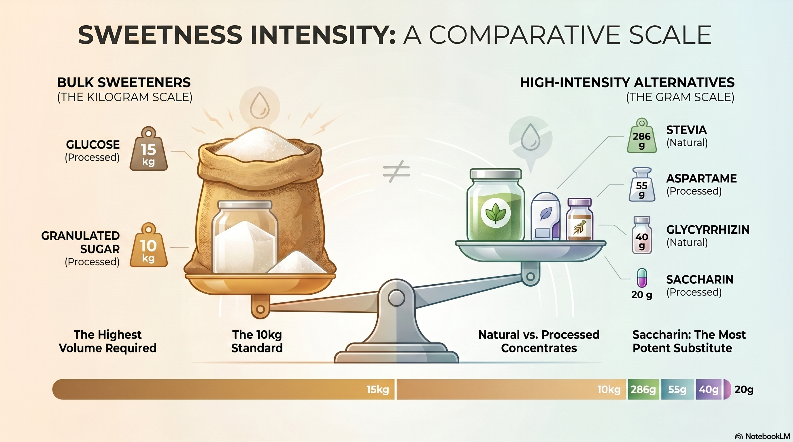
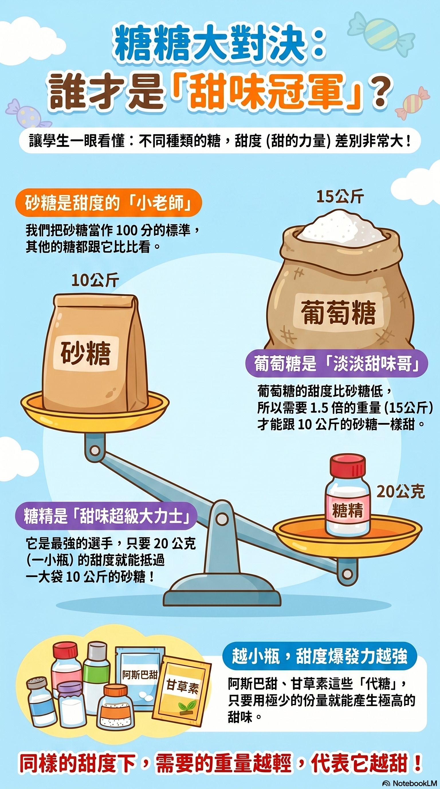

📊 甜度強度對比圖表


⚖️ 互動式甜度換算器
調整砂糖的重量，即時換算達到「相同甜度」時其他甜味劑所需的物理重量！
公斤 (kg)
葡萄糖
淡淡甜味哥 (Processed)
15 kg
1.5x 砂糖體積
砂糖
甜度基準對照組 (Standard)
10 kg
1.0x 基準
甜葉菊
天然萃取代糖 (Natural)
286 g
0.0286x 重量
阿斯巴甜
加工合成代糖 (Processed)
55 g
0.0055x 重量
甘草素
甘草天然提取 (Natural)
40 g
0.0040x 重量
糖精
甜味超級大力士 (Processed)
20 g
0.0020x 重量
💡 甜味藥劑學知識小講堂
體積的奧秘
同樣達到 100 分的甜度，高強度的代糖（如糖精、甘草素）只需要克級甚至毫克級的物理份量，而一般糖類需要公斤級！
天然 vs 人工
甜葉菊與甘草素屬於天然提取的濃縮代糖，而阿斯巴甜和糖精則是經過精細化學加工合成的高強度甜味劑。
甜度基準「小老師」
在科學研究中，我們把「砂糖」的甜度定義為 100 分。葡萄糖的甜度較淡，因此需要 1.5 倍的重量才能與砂糖一樣甜！